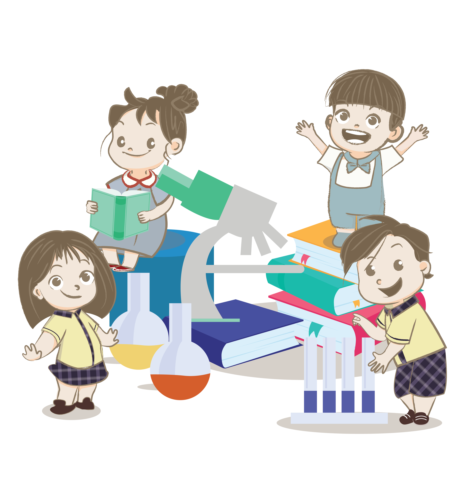

Testimonies
Parent Testimonials
Hear what our parents share about their experience at Kasih Paramitha School. Their trust and feedback motivate us to provide quality education, a nurturing environment, and meaningful learning experiences for every child.

Sharon's mom
Orang tua murid dari Sharon
Kasih Paramitha School has a well planned curriculum that stimulates creativity and encourages independent learning. The teaching at KPS is interactive which strengthening problem solving and critical thinking. Fun learning method also makes Sharon always excited to meet her teachers and little friends. I am more satisfied with the improvement of Sharon's proficiency in English, even though English is not her native language. I love the teachers dedication and how they ensure that every child gets what they need, especially in this very challenging pandemic period with all of the online classes. I really appreciate all of their never ending efforts. Keep up the good work miss!
Chrisvin's mom
Orang tua murid dari Chrisvin
From the start, I sent Chrisvin to KPS, to be honest, I didn't expect much, considering that I chose a school in an area not in a big city like the one I live now. I was quite scared initially, gambling my child took his nursery step here. Not to mention online learning that my child has never taken at all, whether he wants to or not, at that time I thought, just try it instead of in the morning he doesn't have a habit to study. School days are always the best for kid's life. However, slowly I started to believe this school try to provide the best foundation for my son. In the process, we are happy to learn together with his friends and teachers who are very friendly, caring, helpful, and motivating. We are very satisfied with the progress and the quality of education he receives. Very grateful, our choice is correct. Keep up the good work! Keep forward!! We highly recommended this school to anyone. Thankyou KPS!
Jillian's mom
Orang tua murid dari Jillian
Dari awal saya memang tertarik memasukkan anak saya di Kasih Paramitha School. KPS memiliki fasilitas yang baik dan sistem pembelajaran yang bagus. Guru-guru di KPS juga ramah dan telaten dalam mendidik anak-anak, sehingga anak saya menjadi lebih mandiri dan dapat mengembangkan motorik kasar dan halusnya dengan sangat baik. Hal yang paling terasa adalah selama pandemi, KPS tetap berupaya agar anak-anak tetap bisa belajar secara online walaupun tidak bisa melakukan tatap muka di sekolah. Terima kasih untuk seluruh guru dan staff di KPS.
Klaviera's mom
Orang tua murid dari Klaviera
Klaviera has been a student in Kasih Paramitha School for three years and from what I have seen my daughter's experienced, I can tell you it is a great school. The teachers are kind and the rules help to keep the school and students safe especially during the pandemic. The teachers truly care about every student here and they make sure everyone gets the best education. The teaching is fun so kids really like their classes. I can see klavie learns and improved a lot. I love this school and I think I couldn't have picked a better school than Kasih Paramitha School. Last but not least, I would like to thank you for teaching klavie to read, write, teaching her to think and solve problems on her own, and most importantly teaching her.
Arkhana's mom
Orang tua murid dari Arkhana
Awal mula tahu Kasih Paramitha School dari sosial media. Saya coba menghubungi contact person yang ada di salah satu postingan KPS. Akhirnya saya membuat janji untuk bertemu dengan Miss di KPS tersebut. Saya membawa Arkhana, iya Arkhana nama anak saya. Setelah sharing dan menemukan kecocokan Arkhana dengan salah satu Miss di KPS, akhirnya Arkhana untuk sementara masuk di kelas Aruna sambil menunggu tahun ajaran baru. Setelah beberapa bulan, official juga Arkhana memakai seragam di KPS dan menjadi siswa PG B. Perkembangan Arkhana yang menurut saya sangat pesat selama di KPS. Yang sebelumnya Arkhana agak terkendala di komunikasinya, konsentrasinya, dan sensorik motoriknya pada usianya saat itu. Tetapi setelah dibimbing oleh Miss-Miss yang super telaten di KPS, Arkhana alhamdulillah sekarang sudah berkembang seperti anak seusianya. Bahkan semenjak di sana, Arkhana mengerti daily activity di rumah yang sebelumnya selalu dilayani, tetapi sekarang sudah self service untuk dirinya sendiri. Dan yang terpenting, di KPS walaupun mayoritas peserta didiknya non-Muslim, tetapi toleransi beragamanya sangat baik. Sesama umat beragama tanpa membedakan satu sama lainnya. Karena di KPS bukan saja ilmu yang diajarkan, tetapi adab-adab dan kebiasaan baik sehari-hari yang ditanamkan kepada peserta didiknya. Itu yang saya rasakan sebagai orang tua murid. Masih 2 tingkat lagi Arkhana di KPS. Harapannya semoga KPS bisa memiliki jenjang pendidikan formal selanjutnya. Dan tidak lupa, saya berterima kasih kepada Ibu Leader Yayasan dan Miss-Miss KPS yang sudah menyediakan sarana dan membimbing Arkhana. Semoga menjadi ladang pahala dan amal jariyah yang mengalir terus-menerus. Aamiin.
Shaqueena's mom
Orang tua murid dari Shaqueena
Dari awal saya survei sekolah ditarakan saya langsung tertarik dengan KPS karna dari segi fasilitas yang disediakan dan juga ada dokter visite dan psikolog yang rutin datang sehingga para orangtua tidak perlu khawatir akan tumbuh kembang anak. Selain itu KPS memiliki kurikulum yang lebih unggul dan melatih motorik maupun sensorik anak dengan sangat baik. Saya sangat senang melihat perkembangan anak saya yang awalnya masih takut sampai akhirnya anak saya merasa sekolah menjadi menyenangkan berkat para miss-miss diKPS yang super telaten dan sabar dalam mendidik. Terima kasih untuk seluruh guru-guru maupun staf KPS.🙏
Gemma's mom
Orang tua murid dari Gemma
Dear Miss-Miss Kasih Paramitha School, terutama wali kelas Gemma di KG A (Miss Tiara), KG B (Miss Lena) dan Miss calistung Gemma (Miss Siti). Saya mau menyampaikan terima kasih banyak atas bimbingan, pengajaran, kesabaran, dedikasi dan hari-hari yang menyenangkan selama Gemma di KPS. KPS adalah sekolah paket komplit dengan tidak hanya pendidikan formal yang diajarkan, tetapi dari segi perilaku, sikap, kebersihan diri, kesehatan, ketangkasan, permainan dan banyak lagi lainnya. Setelah bersekolah di KPS selama hampir 2 tahun ini, Gemma sudah banyak sekali peningkatan pengetahuan, perilaku, semakin lancar membaca, berhitung dan banyak hal yang diceritakan sepulang sekolah. Tak lupa juga saya ingin menyampaikan mohon maaf bila Gemma dan kami selaku orangtua banyak merepotkan selama sekolah. Tidak ada kritik selain doa semoga KPS semakin sukses lagi, semakin berkembang ke depannya bahkan bisa melanjutkan membuka SD SMP SMA dan tetap menjadi sekolah terbaik di Tarakan. Terimakasih Kasih Paramitha School 💛
Shanum's Mom
Orang tua murid dari Shanum